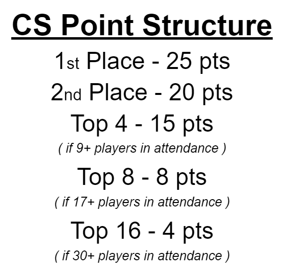
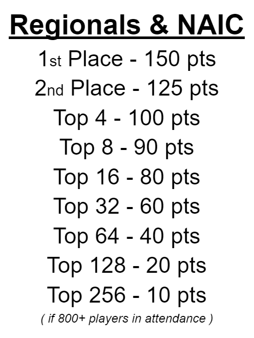
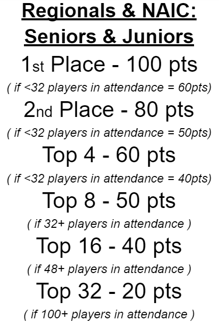

2022 Carolina Series Championships
From January 1st through July 3rd, players from around the Carolinas can compete and earn points to earn an invite to the Carolina State Championships in late July!
There will be many events each month all throughout North & South Carolina, compete in as many events as you like to accumulate points to climb the ranks of the Carolinas and earn a spot in the most prestigous event on the east coast! The Carolina State Champion will not only be known as the best, like no one ever was, but will be presented with a 1st Place Trophy, Champion playmat, cash, and more!

Earn CS Points
Events around the Carolinas will be announced throughout the year, although each event will be different in the form of prizes, format, organizer and location... the point structure will always be as follows for the top finishers:
All Carolina Invitational Events will hand out CS Points that accumulate to your Carolina Standing, of which they'll all use the above point structure. (There is a BFL of 10 in place. Once a player earns CS Points from 10 events, only finishing an event with a better placement than their worst can add points to their ranking from there on out.) Additionally, players will also be able to earn points towards the State Championships from officially sanctioned events simply based on their placement from said events. Though, Carolina players will not earn Attendance Points from Regionals.

To reiterate, events that are part of the Carolina Series Invitational Championships are NOT officially sanctioned by Play! Pokemon or TPCI, nor are we claiming that any future sanctioned events are part of this series.
Attendance Points
For each event a player attends throughout the season, they'll recieve 1 Attendance Point. What are they for? Well first off, the four players at the end of June with the most Attendance Points will earn an automatic Invitation to the State Championships in July!
Additonally, any and all players who earn at least 5 Attendance Points by the July 3rd will be eligible to particpate in the Last Chance Qualifier, an event taking place the day before the State Championships. The top 4 finishers of the LCQ will earn the privelage to compete in States the next day! So get out there and play!
Event Structuring
In order to keep all events consistent throughout the series, all stores/organizers must follow these rules for all events, no exceptions.
All rounds MUST be timed accordingly, to insure that the state of the game is followed and the rightful outcomes occur.
Swiss Rounds:
• If 12 players or fewer - 4 rounds
• If 13 players or more - 5 rounds
• If 33 players or more - 6 rounds
• Best of 1 - 30 minutes
Top Cut:
• If 8 players or fewer - no cut
• If 9 players or more - Top 4
• If 20 players or more - Top 8
• Best of 3 - 60 minutes
Available Formats
Here comes the fun part! While most events will keep up to date with the 2022 Standard format, (SwSh-on), some events may be Expanded, use older retro formats like 2010 & 2017, and even GLC format (Gym Leader Challenge)! The possibilities and fun times are limitless! And fret not, for any non-Standard retro format events, we'll have extra decks/cards available for use, and would allow the use of printed proxies so that anyone and everyone can participate!
• Standard Format
• Expanded Format
• GLC Format
• 2010 Worlds Format
• 2017 Worlds Format
Who can Play?
Well, anyone! Players of all ages are invited to attend and compete for their spot in the final State Championships! Though, do understand that there will be NO seperation in age divisions throughout Carolina Series events. We'll discuss how Junior & Senior division players can earn CS Points based on their placements from officially sanctioned events as we draw closer to that time.
Though this series is catered towards the players of the Carolinas, anyone from anywhere is welcome, you do not need to be a resident of NC or SC to attend and play. However, at this time, it is planned to only send out invitations to the final State Championships for those who reside in the Carolinas, respectively. For players who live in surrounding states, that happen to attend multiple Carolina Series events, we'll make an exception and invite those who fall along that line.
Please note that players who are banned from sanctioned events due to not being in compliance with Pokemon's code of conduct/guidelines, are not allowed to participate. If you feel that this shouldn't apply to you or should recieve an exemption, reach out to us and we will respond and make a decision per individual basis.

Host an Event
Want your store to be part of this tournament series? Email us at carolinaseriestcg@gmail.com to create and register an event so that your local players, and those willing to travel, may earn CS Points towards their invitation to the Carolina State Championships!
Let's get everyone involved, spread the word, the more players, the better, the more stores, the better! If you know of a store/location that'd be perfect to host an event, have said store or organizer email us at carolinaseriestcg@gmail.com.
State Championships FAQ
When: The final Invitational Tournament will take place the weekend of July 30th, 2022.
Where: The State Invitational Championships will take place in Concord, NC. As that is the most centralized area for an event like this.
Who can Play: As previously mentioned, the Top 32 Players of the Carolina Series Season will be invited to play for the Championship title!
Technically, more than 32 Players may be invited to the State Finals. For anyone who finishes the season with the same amount of CS Points as the 32nd person in the Standings, those players will earn an invitation aswell.
If some invitees are unable to attend, invitations will be sent out one at a time down the list of players by total CS Points in the final Standings. What does that mean? Example: for whomever finishes the year off at say... 37th Place in the Standings, there's a possibility that multiple players in the Top 32 invitee-list won't be able to make it, thus 37th, 38th, 39th (and so on) Place just might recieve an invitation. This is to insure that the Final State Championships has at least 32 Players in attendance, and so that the spots aren't wasted for someone who could make it.
Invitational Event Info:
- Standard format (SwSh-on).
- Swiss Rounds into Top 8 Cut
Health & Safety
The health and safety of everyone is very important to us. While Pokemon has already announced that their officially sanctioned events will require masks and proof of a covid vaccination. Carolina series events will align with each venue's / state's policies. So, while we recommend everyone to be as safe as possible, if a store doesn't require masks, said event won't either to keep things simple.
Store's mask requirements, or lack-there-of, will be clearly stated per event's info page, though again, masks are recommended at each event, not just to keep in compliance with Pokemon's wishes, but to protect yourself and fellow Pokemon fans!